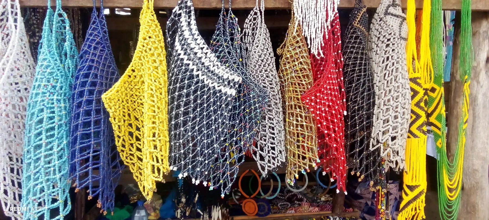

Every item is crafted with care and a strong cultural feel.
Welcome to SharonCraft
Handmade in Kenya
Easy ordering
Warm gift ideas
Clean, colorful handmade beadwork for happy homes and beautiful gifting.
Discover bracelets, necklaces, decor, and occasion sets made with a bright East African spirit. Ordering is simple, mobile-friendly, and ready for WhatsApp and M-Pesa.
Pick your item, chat on WhatsApp, then confirm payment and delivery.
Perfect for birthdays, weddings, housewarming gifts, and personal style.


Client Favorite
Kijani Mirror Duo
Bright decor with a clean modern finish for bedrooms and living rooms.
Featured Products
Made to catch the eye and keep the shopping process simple.
Start with our most-loved pieces, then move into the full collection when you are ready.
Shop by Category
Pick a lane and explore fast.
Each circle takes you straight into one part of the collection without extra reading or clutter.
Popular Searches
Start with what people actually search for.
These focused pages help shoppers land on the right SharonCraft collection faster.

Buying Guides
Read before you buy if you want the right piece faster.
These guides help SharonCraft show up for question-style searches while helping clients shop with more confidence.

Where to buy Kenyan artifacts
Learn how to compare authentic handmade artifact pages and culture-inspired decor options.

How to choose Maasai jewelry
Use occasion, gift intent, and outfit balance to narrow your choice quickly.
Best handmade Kenyan gifts
See which gift ideas work best for weddings, birthdays, and housewarming moments.
Inspired by craft, color, family moments, and everyday African beauty.
SharonCraft brings together beadwork that feels joyful, modern, and easy to live with. From statement mirrors to simple bracelets, each item is made to feel special without making shopping complicated.



From product photo to checkout in a few comfortable steps.
Open the product page, check the gallery, and confirm the style you want.
Ask about colors, delivery, or custom requests before paying.
Get the total, share your location, and finish your order quickly.
Why customers feel confident ordering from SharonCraft.
SharonCraft Products & Services (Q&A)
What services and products does SharonCraft offer?
SharonCraft offers a wide variety of handmade African beadwork, including Beaded Jewelry (bracelets, necklaces), Bridal & Occasion Bead Sets, and Beaded Home Decor (like framed mirrors and table sets). All products are authentic and locally crafted in Kenya.
How do I order from SharonCraft?
We provide a seamless and fast ordering experience. Customers pick their items online and click the "Chat on WhatsApp" button, directing them to our team where they finalize customizations, arrange delivery, and process payment directly via M-Pesa.
What makes SharonCraft unique?
We combine the heritage and joyful color of traditional East African bead craftsmanship with the convenience of modern, conversational commerce, supporting local art economies while delivering highly personal service.
Fresh This Week